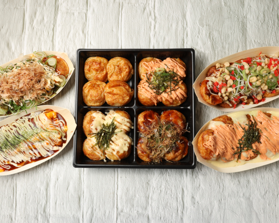

野田の皆さまからいただいた、お客様の声
Googleの口コミでは、評価4.7(クチコミ64件)という嬉しい評価をいただいております。日頃からご来店くださる皆さまに、心より感謝申し上げます。
焼き上がりまで15分ほどかかりましたが、その間に無料の卵スープを出してくださり、待ち時間も快適に過ごせました。人数まで気にかけてくださる対応がありがたかったです。
ご来店のお客様より関東では珍しい、ふわふわとろとろの大阪風の生地に驚きました。出汁がしっかり効いていて、箸で持つのも一苦労なくらい熱々。本場の味を感じられました。
ご来店のお客様より
© Google投稿者: 本場大阪たこ焼き はげたこ 野田店トッピングの種類が豊富で、何を選ぶか迷ってしまうほど。人気の「先ずコレ!!セット」をいただきましたが、タレなしでも生地そのものが美味しくて驚きました。
ご来店のお客様より茨城県守谷市にある「はげたこ」の2号店と聞いて来店しました。ご夫婦で営まれている温かい雰囲気で、本店の味をそのまま野田でも楽しめて嬉しかったです。
ご来店のお客様より電話で予約をした際も、お店に着いたときも、終始丁寧で優しい対応をしていただきました。焼き上がりまで少し時間はかかりますが、待つ価値のある美味しさでした。
ご来店のお客様より